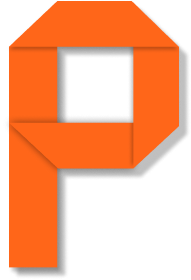
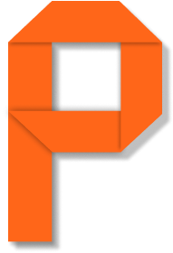

Introducing you a sarcastically serious framework
PaperAK is a free, open-source CSS framework that builds responsive designs using pre-defined classes, components and utilities
PaperAK is a free, open-source CSS framework that builds responsive designs using pre-defined classes, components and utilities
